- ពន្យល់បានពីទំនាក់ទំនងលីនេអ៊ែររវាងពីរអថេរ
- រកសមីការតម្រែតម្រង់លីនេអ៊ែរ
- រកមេគុណនៃតម្រែតម្រង់លីនេអ៊ែរនិងបកស្រាយអត្ថន័យរបស់មេគុណនោះ ។
1. ទំនាក់ទំនងលីនេអ៊ែរ
ឧទាហរណ៍ 1 : ក្រុមហ៊ុនមួយបានកំណត់ប្រាក់បៀវត្សសម្រាប់បុគ្គលិកទៅតាមចំនួនឆ្នាំនៃអតីតភាពដែលបម្រើការងារក្នុងក្រុមហ៊ុន ។ តាង \(\displaystyle x_{i}\) ជាចំនួនឆ្នាំនៃអតីតភាព ហើយ \(\displaystyle y_{i}\) ជាប្រាក់បៀវត្សគិតជាពាន់រៀល ។ គេបានតារាងប្រាក់បៀវត្សដូចខាងក្រោម ៖
| \(\displaystyle x_{i}\) | \(\displaystyle 0\) | \(\displaystyle 1\) | \(\displaystyle 2\) | \(\displaystyle 3\) |
| \(\displaystyle y_{i}\) | \(\displaystyle 120\) | \(\displaystyle 170\) | \(\displaystyle 220\) | \(\displaystyle 270\) |
គេសង្កេតឃើញថាប្រាក់បៀវត្ស \(\displaystyle y_{i}\) របស់បុគ្គលិកកើនតាមចំនួនឆ្នាំ \(\displaystyle x_{i}\) ។ គេថា \(\displaystyle x_{i}\) និង \(\displaystyle y_{i}\) មានទំនាក់ទំនងនឹងគ្នា ។ ដើម្បីងាយស្រួលសិក្សាតទៅមុខទៀត គេបកស្រាយទិន្នន័យខាងលើដោយចំណុចដែលមានកូអរដោនេ \(\displaystyle (x_{i},y_{i})\) ។ ធ្វើយ៉ាងនេះ គេបានចំណុច \(\displaystyle (0,120)\), \(\displaystyle (1,170)\), \(\displaystyle (2,220)\) និង \(\displaystyle (3,270)\) ។ គេដៅចំណុចទាំងនោះក្នុងតម្រុយកែងមួយ ។
តាមផលធៀប
បញ្ជាក់ថាចំណុចទាំងអស់ខាងលើស្ថិតនៅលើបន្ទាត់តែមួយ ដែលមានមេគុណប្រាប់ទិសស្មើនឹង \(\displaystyle 50\) ហើយមានសមីការ
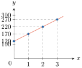
សមីការ \(\displaystyle y=50x+120\) ជាទំនាក់ទំនងរវាង \(\displaystyle x\) និង \(\displaystyle y\) ដែលហៅថា ទំនាក់ទំនងលីនេអ៊ែរ ។
សមីការបន្ទាត់ ឬសមីការលីនេអ៊ែរនេះអាចឱ្យគេយកទៅប៉ាន់ស្មានប្រាក់បៀវត្សរបស់បុគ្គលិកធៀបទៅនឹងចំនួនឆ្នាំនៃអតីតភាពដែលបានបម្រើការងារ ។
បើគេចង់ដឹងប្រាក់បៀវត្សរបស់បុគ្គលិកដែលមានអតីតភាព \(\displaystyle 5\) ឆ្នាំ គេគ្រាន់តែជំនួស \(\displaystyle x=5\) ក្នុងសមីការ \(\displaystyle y=50x+120\) គេបាន \(\displaystyle y=50(5)+120=370\) មានន័យថាប្រាក់បៀវត្សដែលត្រូវនឹងអតីតភាពការងារ \(\displaystyle 5\) ឆ្នាំស្មើនឹង \(\displaystyle 370\) ពាន់រៀល ។
លំហាត់គំរូ : បំពេញចន្លោះខាងក្រោមបើអាច រួចរកសមីការបន្ទាត់ដែលកាត់តាមចំណុចទិន្នន័យទាំងនោះ បើមាន
ក.
| \(\displaystyle x_{1}\) | \(\displaystyle 1\) | \(\displaystyle 3\) | \(\displaystyle 2\) | \(\displaystyle 6\) | \(\displaystyle 7\) |
| \(\displaystyle y_{1}\) | \(\displaystyle -1\) | \(\displaystyle 5\) | \(\displaystyle 2\) | \(\displaystyle \dots\) | \(\displaystyle 17\) |
ខ.
| \(\displaystyle x_{1}\) | \(\displaystyle 7\) | \(\displaystyle 5\) | \(\displaystyle 4\) | \(\displaystyle 3\) | \(\displaystyle 6\) |
| \(\displaystyle y_{1}\) | \(\displaystyle 9\) | \(\displaystyle \dots\) | \(\displaystyle 6\) | \(\displaystyle 2\) | \(\displaystyle 7\) |
ដំណោះស្រាយ
ក. ចំណុចទិន្នន័យ \(\displaystyle (1,-1)\), \(\displaystyle (3,5)\), \(\displaystyle (2,2)\), \(\displaystyle (7,17)\)
គេបានផលធៀប \(\displaystyle \frac{5+1}{3-1}=\frac{6}{2}=3\), \(\displaystyle \frac{2-5}{2-3}=\frac{-3}{-1}=3\) និង \(\displaystyle \frac{17-2}{7-2}=\frac{15}{5}=3\) ។
ដោយផលធៀបស្មើនឹង \(\displaystyle 3\) ថេរ នាំឱ្យចំណុចទាំងនោះស្ថិតនៅលើបន្ទាត់តែមួយ ។
គេបាន \(\displaystyle \frac{y+1}{x-1}=3\) ឬ \(\displaystyle y+1=3(x-1) \Rightarrow y=3x-4\) ។
បើ \(\displaystyle x=6\) នាំឱ្យ \(\displaystyle y=3(6)-4=14\) ។ ដូច្នេះ សមីការបន្ទាត់ដែលកាត់តាមចំណុចទាំងនោះគឺ \(\displaystyle y=3x-4\) ។
ដូច្នេះ
| \(\displaystyle x_{1}\) | \(\displaystyle 1\) | \(\displaystyle 3\) | \(\displaystyle 2\) | \(\displaystyle 6\) | \(\displaystyle 7\) |
| \(\displaystyle y_{1}\) | \(\displaystyle -1\) | \(\displaystyle 5\) | \(\displaystyle 2\) | \(\displaystyle 14\) | \(\displaystyle 17\) |
(សម្គាល់៖ នៅក្នុងសៀវភៅពុម្ពទំព័រ 149 ជួរដេកទី 1 នៃតារាងចម្លើយបោះពុម្ពខុសជា \(\displaystyle y_{1}\) ជំនួសឱ្យ \(\displaystyle x_{1}\) ។)
ខ. ចំណុចទិន្នន័យ \(\displaystyle (7,9)\), \(\displaystyle (4,6)\), \(\displaystyle (3,2)\), \(\displaystyle (6,7)\)
គេបានផលធៀប \(\displaystyle \frac{6-9}{4-7}=\frac{-3}{-3}=1\), \(\displaystyle \frac{2-6}{3-4}=\frac{-4}{-1}=4\) ។
គេទាញបាន \(\displaystyle \frac{6-9}{4-7} \neq \frac{2-6}{3-4}\) ។
ហើយគេសន្និដ្ឋានថាចំណុចទាំង \(\displaystyle 4\) មិនស្ថិតនៅលើបន្ទាត់តែមួយទេ ។ ប៉ុន្តែគេត្រូវការបន្ទាត់មួយដើម្បីធ្វើការប៉ាន់ស្មានតម្លៃ \(\displaystyle y\) ទៅតាមតម្លៃ \(\displaystyle x\) ។
2. សមីការបន្ទាត់តម្រែតម្រង់លីនេអ៊ែរ
2.1. លក្ខខណ្ឌតម្លៃតូចបំផុតនៃផលបូកការេប្រវែង
ដើម្បីឱ្យគ្រប់ចំណុចទិន្នន័យនៅជិតបំផុតពីបន្ទាត់មួយ ក្រៅពីវិធីដែលបានសិក្សានៅមេរៀនមុន គេមានវិធីមួយទៀតដែលគេនិយមប្រើជាងគេ ។
គេមានចំណុចទិន្នន័យ \(\displaystyle (x_{1},y_{1})\), \(\displaystyle (x_{2},y_{2})\), \(\displaystyle (x_{3},y_{3})\), \(\displaystyle \dots\), \(\displaystyle (x_{n},y_{n})\) នោះគេអាចដៅចំណុចទិន្នន័យនេះក្នុងតម្រុយកែងមួយ ។
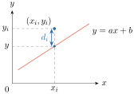
តាមរូបខាងលើគេបាន \(\displaystyle d_{i}=y_{i}-(ax_{i}+b)\) ។ ដើម្បីឱ្យបន្ទាត់ \(\displaystyle y=ax+b\) ស្ថិតនៅជិតបំផុតពីគ្រប់ចំណុចទិន្នន័យ \(\displaystyle (x_{1},y_{1})\), \(\displaystyle (x_{2},y_{2})\), \(\displaystyle (x_{3},y_{3})\), \(\displaystyle \dots\), \(\displaystyle (x_{n},y_{n})\) លុះត្រាតែ \(\displaystyle \sum_{i=1}^{n}d_{i}^{2}\) មានតម្លៃតូចបំផុត ។
គេបាន
រកតម្លៃ \(\displaystyle a\) និង \(\displaystyle b\) ដែលធ្វើឱ្យតម្លៃ \(\displaystyle \sum_{i=1}^{n}d_{i}^{2}\) តូចបំផុត ពេលនោះគេនឹងបានបន្ទាត់ \(\displaystyle y=ax+b\) ជាបន្ទាត់ដែលស្ថិតនៅជិតបំផុតពីគ្រប់ចំណុចទិន្នន័យ ។
យក \(\displaystyle b\) ជាអថេរ : តាង \(\displaystyle y(b)=\sum_{i=1}^{n}d_{i}^{2}=\sum_{i=1}^{n}[(y_{i}-ax_{i})-b]^{2}=\sum_{i=1}^{n}(y_{i}-ax_{i})^{2}-2\sum_{i=1}^{n}(y_{i}-ax_{i})b+nb^{2}\)
\[y'(b)=-2\sum_{i=1}^{n}(y_{i}-ax_{i})+2nb\]\[y'(b)=0 \text{ ត្រូវនឹង } b_{0}=\frac{\sum_{i=1}^{n}(y_{i}-ax_{i})}{n}\]\(\displaystyle b\) \(\displaystyle -\infty\) \(\displaystyle b_{0}\) \(\displaystyle +\infty\) \(\displaystyle y'(b)\) \(\displaystyle -\) \(\displaystyle 0\) \(\displaystyle +\) \(\displaystyle y(b)\) \(\displaystyle \searrow\) \(\displaystyle \nearrow\) \(\displaystyle y=\sum_{i=1}^{n}d_{i}^{2}\) មានតម្លៃអប្បបរមាកាលណា \(\displaystyle y'(b)=0\) ត្រូវនឹង
\[-2\sum_{i=1}^{n}(y_{i}-ax_{i})+2nb=0 \quad \text{ឬ} \quad a\sum_{i=1}^{n}x_{i}+nb=\sum_{i=1}^{n}y_{i} \quad (1)\]យក \(\displaystyle a\) ជាអថេរ :
\[y(a)=\sum_{i=1}^{n}[(y_{i}-b)-ax_{i}]^{2}=\sum_{i=1}^{n}(y_{i}-b)^{2}-2\left[\sum_{i=1}^{n}(y_{i}-b)x_{i}\right]a+a^{2}\sum_{i=1}^{n}x_{i}^{2}\]\[y'(a)=-2\sum_{i=1}^{n}[(y_{i}-b)x_{i}]+2a\sum_{i=1}^{n}x_{i}^{2}\]មាន \(\displaystyle a_{0}=\frac{\sum_{i=1}^{n}(y_{i}-b)x_{i}}{\sum_{i=1}^{n}x_{i}^{2}}\) ដែល \(\displaystyle y'(a_{0})=0\)
\(\displaystyle a\) \(\displaystyle -\infty\) \(\displaystyle a_{0}\) \(\displaystyle +\infty\) \(\displaystyle y'(a)\) \(\displaystyle -\) \(\displaystyle 0\) \(\displaystyle +\) \(\displaystyle y(a)\) \(\displaystyle \searrow\) \(\displaystyle \nearrow\) \(\displaystyle y=\sum_{i=1}^{n}d_{i}^{2}\) មានតម្លៃអប្បបរមាកាលណា \(\displaystyle y'(a)=0\) ត្រូវនឹង
\[-2\sum_{i=1}^{n}[(y_{i}-b)x_{i}]+2a\sum_{i=1}^{n}x_{i}^{2}=0 \quad \text{ឬ} \quad a\sum_{i=1}^{n}x_{i}^{2}+b\sum_{i=1}^{n}x_{i}=\sum_{i=1}^{n}x_{i}y_{i} \quad (2)\]គេបានប្រព័ន្ធសមីការដែលមានអញ្ញាត \(\displaystyle a\) និង \(\displaystyle b\)
\[\begin{cases} a\sum_{i=1}^{n}x_{i}+nb=\sum_{i=1}^{n}y_{i} & (1) \\ a\sum_{i=1}^{n}x_{i}^{2}+b\sum_{i=1}^{n}x_{i}=\sum_{i=1}^{n}x_{i}y_{i} & (2) \end{cases}\]\(\displaystyle (1) \times \sum_{i=1}^{n}x_{i} + (2) \times (-n)\) នាំឱ្យគេបាន
\[a=\frac{n\sum_{i=1}^{n}x_{i}y_{i}-\left(\sum_{i=1}^{n}x_{i}\right)\left(\sum_{i=1}^{n}y_{i}\right)}{n\sum_{i=1}^{n}x_{i}^{2}-\left(\sum_{i=1}^{n}x_{i}\right)^{2}}\]តាម \(\displaystyle (1)\) គេបាន \(\displaystyle b=\frac{1}{n}\left(\sum_{i=1}^{n}y_{i}-a\sum_{i=1}^{n}x_{i}\right)\) ។
គេបានបន្ទាត់ \(\displaystyle y=ax+b\) ដែលស្ថិតនៅជិតបំផុតពីគ្រប់ចំណុចទិន្នន័យ ហៅថា បន្ទាត់តម្រែតម្រង់លីនេអ៊ែរ ហើយទំនាក់ទំនង \(\displaystyle y=ax+b\) ហៅថា សមីការតម្រែតម្រង់លីនេអ៊ែរ ។
បើគេមានចំណុចទិន្នន័យ \(\displaystyle (x_{1},y_{1}), (x_{2},y_{2}), (x_{3},y_{3}), \dots, (x_{n},y_{n})\) នោះបន្ទាត់តម្រែតម្រង់លីនេអ៊ែរមានសមីការរាង \(\displaystyle y=ax+b\) ដែល
\(\displaystyle b=\frac{\sum_{i=1}^{n}y_{i}}{n}-\frac{\sum_{i=1}^{n}x_{i}}{n}a\), \(\displaystyle b=\bar{y}-a\bar{x}\) ឬ \(\displaystyle \bar{y}=a\bar{x}+b\) មានន័យថាបន្ទាត់តម្រែតម្រង់លីនេអ៊ែរកាត់តាមចំណុចមធ្យម \(\displaystyle (\bar{x},\bar{y})\) ។
ឧទាហរណ៍ 1 : រកសមីការតម្រែតម្រង់លីនេអ៊ែរនៃទិន្នន័យក្នុងតារាងខាងក្រោមនេះ ៖
| \(\displaystyle x_{i}\) | \(\displaystyle 1\) | \(\displaystyle 1\) | \(\displaystyle 2\) | \(\displaystyle 4\) |
| \(\displaystyle y_{i}\) | \(\displaystyle 1\) | \(\displaystyle 2\) | \(\displaystyle 2\) | \(\displaystyle 6\) |
សមីការតម្រែតម្រង់លីនេអ៊ែរមានរាង \(\displaystyle y=ax+b\) ។ គេអាចរកតម្លៃ \(\displaystyle a\) និង \(\displaystyle b\) តាមរូបមន្ត
គេមាន \(\displaystyle 4\) ចំណុច ដូច្នេះ \(\displaystyle n=4\) ។ គណនាផលបូកតាមតារាងខាងក្រោម ៖
| \(\displaystyle x_{i}\) | \(\displaystyle y_{i}\) | \(\displaystyle x_{i}y_{i}\) | \(\displaystyle x_{i}^{2}\) |
| \(\displaystyle 1\) | \(\displaystyle 1\) | \(\displaystyle 1\) | \(\displaystyle 1\) |
| \(\displaystyle 1\) | \(\displaystyle 2\) | \(\displaystyle 2\) | \(\displaystyle 1\) |
| \(\displaystyle 2\) | \(\displaystyle 2\) | \(\displaystyle 4\) | \(\displaystyle 4\) |
| \(\displaystyle 4\) | \(\displaystyle 6\) | \(\displaystyle 24\) | \(\displaystyle 16\) |
| \(\displaystyle \sum_{i=1}^{4}x_{i}=8\) | \(\displaystyle \sum_{i=1}^{4}y_{i}=11\) | \(\displaystyle \sum_{i=1}^{4}x_{i}y_{i}=31\) | \(\displaystyle \sum_{i=1}^{4}x_{i}^{2}=22\) |
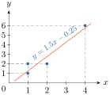
គេបាន \(\displaystyle a=\frac{4(31)-8(11)}{4(22)-8^{2}}=\frac{36}{24}=1.5\)
ដូច្នេះ សមីការតម្រែតម្រង់លីនេអ៊ែរគឺ \(\displaystyle y=1.5x-0.25\) ។
ឧទាហរណ៍ 2 : ក្នុងសាលារៀនបឋមសិក្សាមួយ គេជ្រើសរើសសិស្សចំនួន \(\displaystyle 10\) នាក់ដើម្បីធ្វើការសិក្សារកទំនាក់ទំនងរវាងកម្ពស់នឹងអាយុ ។ គេទទួលបានលទ្ធផលដូចតារាងខាងក្រោម៖
| \(\displaystyle x_{i}\) អាយុ (ឆ្នាំ) | \(\displaystyle 6\) | \(\displaystyle 7\) | \(\displaystyle 7\) | \(\displaystyle 7\) | \(\displaystyle 9\) | \(\displaystyle 10\) | \(\displaystyle 11\) | \(\displaystyle 9\) | \(\displaystyle 6\) | \(\displaystyle 11\) |
| \(\displaystyle y_{i}\) កម្ពស់ (\(\displaystyle \text{cm}\)) | \(\displaystyle 95\) | \(\displaystyle 90\) | \(\displaystyle 100\) | \(\displaystyle 98\) | \(\displaystyle 120\) | \(\displaystyle 125\) | \(\displaystyle 132\) | \(\displaystyle 116\) | \(\displaystyle 84\) | \(\displaystyle 145\) |
ក. រកសមីការតម្រែតម្រង់លីនេអ៊ែរនៃទិន្នន័យខាងលើ
ខ. ប៉ាន់ស្មានកម្ពស់សិស្សដែលមានអាយុ \(\displaystyle 7\) ឆ្នាំ ។
ក. សមីការតម្រែតម្រង់លីនេអ៊ែរមានរាង \(\displaystyle y=ax+b\) ដែល
គណនាផលបូកតាមតារាងខាងក្រោម ៖ ដោយចំណុចទិន្នន័យមាន \(\displaystyle 10\) នាំឱ្យ \(\displaystyle n=10\)
| \(\displaystyle x_{i}\) | \(\displaystyle y_{i}\) | \(\displaystyle x_{i}y_{i}\) | \(\displaystyle x_{i}^{2}\) |
| \(\displaystyle 6\) | \(\displaystyle 95\) | \(\displaystyle 570\) | \(\displaystyle 36\) |
| \(\displaystyle 7\) | \(\displaystyle 90\) | \(\displaystyle 630\) | \(\displaystyle 49\) |
| \(\displaystyle 7\) | \(\displaystyle 100\) | \(\displaystyle 700\) | \(\displaystyle 49\) |
| \(\displaystyle 7\) | \(\displaystyle 98\) | \(\displaystyle 686\) | \(\displaystyle 49\) |
| \(\displaystyle 9\) | \(\displaystyle 120\) | \(\displaystyle 1080\) | \(\displaystyle 81\) |
| \(\displaystyle 10\) | \(\displaystyle 125\) | \(\displaystyle 1250\) | \(\displaystyle 100\) |
| \(\displaystyle 11\) | \(\displaystyle 132\) | \(\displaystyle 1452\) | \(\displaystyle 121\) |
| \(\displaystyle 9\) | \(\displaystyle 116\) | \(\displaystyle 1044\) | \(\displaystyle 81\) |
| \(\displaystyle 6\) | \(\displaystyle 84\) | \(\displaystyle 504\) | \(\displaystyle 36\) |
| \(\displaystyle 11\) | \(\displaystyle 145\) | \(\displaystyle 1595\) | \(\displaystyle 121\) |
| \(\displaystyle \sum_{i=1}^{10}x_{i}=83\) | \(\displaystyle \sum_{i=1}^{10}y_{i}=1105\) | \(\displaystyle \sum_{i=1}^{10}x_{i}y_{i}=9511\) | \(\displaystyle \sum_{i=1}^{10}x_{i}^{2}=723\) |
គេបាន \(\displaystyle a=\frac{10(9511)-83(1105)}{10(723)-83^{2}}=\frac{3395}{341}=9.96\)
ដូច្នេះ សមីការតម្រែតម្រង់គឺ \(\displaystyle y=9.96x+27.83\) ។
ខ. គេអាចរកតម្លៃ \(\displaystyle y\) ដោយជំនួសតម្លៃ \(\displaystyle x\) ក្នុងសមីការ \(\displaystyle y=9.96x+27.83\)
បើ \(\displaystyle x=7\) នោះ \(\displaystyle y=9.96(7)+27.83=97.55\) កម្ពស់សិស្សដែលត្រូវនឹងអាយុ \(\displaystyle 7\) ឆ្នាំគឺ \(\displaystyle 97.55\text{ cm}\) ។ តាមតារាងទិន្នន័យកម្ពស់សិស្សអាយុ \(\displaystyle 7\) ឆ្នាំមាន \(\displaystyle 90\text{ cm}\), \(\displaystyle 100\text{ cm}\) និង \(\displaystyle 98\text{ cm}\) ។ \(\displaystyle 97.55\text{ cm}\) នេះជាតម្លៃដែលនៅជិតបំផុតទៅនឹងកម្ពស់សិស្សដែលមានអាយុ \(\displaystyle 7\) ឆ្នាំមានកម្ពស់ប្រហែល \(\displaystyle 97.55\text{ cm}\) នៅក្នុងសំណាកដែលគេបានសិក្សា ។ គេអាចយកសមីការ \(\displaystyle y=9.96x+27.83\) ដើម្បីធ្វើការប៉ាន់ស្មានកម្ពស់សិស្សដទៃទៀតបាន បើសិនជា \(\displaystyle x_{i}\) និង \(\displaystyle y_{i}\) មានទំនាក់ទំនងលីនេអ៊ែរគ្នាល្អ ដែលនឹងសិក្សាទៅមុខទៀត ដោយប្រើមេគុណតម្រែតម្រង់លីនេអ៊ែរ ។
(សម្គាល់៖ តម្លៃពិតប្រាកដដោយមិនបង្គត់ចំនួនគឺ \(\displaystyle a=\frac{3395}{341}\approx 9.9560\) និង \(\displaystyle b=\frac{9502}{341}\approx 27.8651\) ហើយនៅពេល \(\displaystyle x=7\) បាន \(\displaystyle y=\frac{33267}{341}\approx 97.5572\text{ cm}\) ។ សៀវភៅប្រើតម្លៃ \(\displaystyle a=9.96\) ដែលបានបង្គត់រួចទៅគណនា \(\displaystyle b=27.83\) ។)
លំហាត់គំរូ : តាមរបាយការណ៍មន្ត្រីម្នាក់មកពីក្រសួងទេសចរណ៍របស់ប្រទេសមួយបានឱ្យដឹងថាចំនួនទេសចរដែលមកកម្សាន្តនៅប្រទេសនោះឱ្យដោយតារាងទិន្នន័យខាងក្រោម៖
| \(\displaystyle x_{i}\) (ឆ្នាំ) | \(\displaystyle 2018\) | \(\displaystyle 2019\) | \(\displaystyle 2020\) | \(\displaystyle 2021\) | \(\displaystyle 2022\) |
| \(\displaystyle y_{i}\) ម៉ឺននាក់ | \(\displaystyle 25.7\) | \(\displaystyle 26.3\) | \(\displaystyle 29.7\) | \(\displaystyle 34.2\) | \(\displaystyle 38.3\) |
បើ \(\displaystyle x=0\) តាងឆ្នាំ \(\displaystyle 2018\)
ក. រកសមីការបន្ទាត់តម្រែតម្រង់លីនេអ៊ែរ ។
ខ. ចូរធ្វើការប៉ាន់ស្មានចំនួនទេសចរ ដែលនឹងមកកម្សាន្តនៅប្រទេសនោះក្នុងឆ្នាំ \(\displaystyle 2023\) ។
ដំណោះស្រាយ បើ \(\displaystyle x=0\) តាងឆ្នាំ \(\displaystyle 2018\) នោះគេបានចំណុចទិន្នន័យ \(\displaystyle (0,25.7)\), \(\displaystyle (1,26.3)\), \(\displaystyle (2,29.7)\), \(\displaystyle (3,34.2)\) និង \(\displaystyle (4,38.3)\) ។
ក. សមីការបន្ទាត់តម្រែតម្រង់លីនេអ៊ែរមានរាង \(\displaystyle y=ax+b\) ដែល
ដោយចំណុចទិន្នន័យស្មើនឹង \(\displaystyle 5\) គេបាន \(\displaystyle n=5\) ។ គណនាផលបូកតាមតារាងខាងក្រោម ៖
| \(\displaystyle x_{i}\) | \(\displaystyle y_{i}\) | \(\displaystyle x_{i}y_{i}\) | \(\displaystyle x_{i}^{2}\) |
| \(\displaystyle 0\) | \(\displaystyle 25.7\) | \(\displaystyle 0\) | \(\displaystyle 0\) |
| \(\displaystyle 1\) | \(\displaystyle 26.3\) | \(\displaystyle 26.3\) | \(\displaystyle 1\) |
| \(\displaystyle 2\) | \(\displaystyle 29.7\) | \(\displaystyle 59.4\) | \(\displaystyle 4\) |
| \(\displaystyle 3\) | \(\displaystyle 34.2\) | \(\displaystyle 102.6\) | \(\displaystyle 9\) |
| \(\displaystyle 4\) | \(\displaystyle 38.3\) | \(\displaystyle 153.2\) | \(\displaystyle 16\) |
| \(\displaystyle \sum_{i=1}^{5}x_{i}=10\) | \(\displaystyle \sum_{i=1}^{5}y_{i}=154.2\) | \(\displaystyle \sum_{i=1}^{5}x_{i}y_{i}=341.5\) | \(\displaystyle \sum_{i=1}^{5}x_{i}^{2}=30\) |
គេបាន \(\displaystyle a=\frac{5(341.5)-10(154.2)}{5(30)-10^{2}}=3.31\)
ដូច្នេះ បន្ទាត់តម្រែតម្រង់លីនេអ៊ែរមានសមីការរាង \(\displaystyle y=3.31x+24.22\) ។
ខ. ប៉ាន់ស្មានចំនួនទេសចរ ដែលនឹងមកកម្សាន្តនៅប្រទេសនោះក្នុងឆ្នាំ \(\displaystyle 2023\)
ឆ្នាំ \(\displaystyle 2023\) ត្រូវនឹង \(\displaystyle x=5\) បើ \(\displaystyle x=5\) នោះ \(\displaystyle y=3.31 \times 5 + 24.22 = 40.77 \approx 41\) ។
ដូច្នេះ ចំនួនទេសចរដែលនឹងមកកម្សាន្តនៅប្រទេសនោះក្នុងឆ្នាំ \(\displaystyle 2023\) ប្រហែល \(\displaystyle 41\) ម៉ឺននាក់ ។
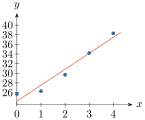
ប្រតិបត្តិ : ក្រុមហ៊ុនមួយលក់រថយន្តដែលបានប្រើប្រាស់រួច ។ តម្លៃលក់បញ្ចុះទៅតាមចំនួនឆ្នាំដែលបានប្រើប្រាស់ ។ តាង \(\displaystyle x_{i}\) ជាចំនួនឆ្នាំដែលបានប្រើប្រាស់ និង \(\displaystyle y_{i}\) តាងតម្លៃលក់ (ឯកតាជាលានរៀល) ។ គេបានតារាងទិន្នន័យដែលបានលក់កន្លងមក
| \(\displaystyle x_{i}\) | \(\displaystyle 2\) | \(\displaystyle 4\) | \(\displaystyle 5\) | \(\displaystyle 5\) | \(\displaystyle 5\) | \(\displaystyle 5\) | \(\displaystyle 6\) | \(\displaystyle 6\) | \(\displaystyle 6\) | \(\displaystyle 7\) | \(\displaystyle 7\) |
| \(\displaystyle y_{i}\) | \(\displaystyle 169\) | \(\displaystyle 103\) | \(\displaystyle 85\) | \(\displaystyle 82\) | \(\displaystyle 89\) | \(\displaystyle 98\) | \(\displaystyle 66\) | \(\displaystyle 95\) | \(\displaystyle 169\) | \(\displaystyle 70\) | \(\displaystyle 49\) |
ក. រកសមីការតម្រែតម្រង់លីនេអ៊ែរនៃទិន្នន័យខាងលើ ។
ខ. ចូរប៉ាន់ស្មានតម្លៃរថយន្តដែលមានចំណាស់ \(\displaystyle 3\) ឆ្នាំ និង \(\displaystyle 5\) ឆ្នាំ ។
ចម្លើយ
ក. \(\displaystyle y=ax+b=-16.61x+185.30\)
ខ. ពេល \(\displaystyle x=3 \Rightarrow y=135.47\)
\(\displaystyle x=5 \Rightarrow y=102.25\)
(សម្គាល់៖ តម្លៃពិតប្រាកដគឺ \(\displaystyle a=-\frac{1229}{74}\approx -16.6081\) និង \(\displaystyle b=\frac{6856}{37}\approx 185.2973\) ។)
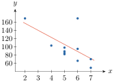
3. មេគុណតម្រែតម្រង់លីនេអ៊ែរ
ចំពោះទិន្នន័យនៃពីរអថេរគេតែងតែសិក្សាថា តើវាមានទំនាក់ទំនងលីនេអ៊ែរគ្នាដែរឬទេ? បើមានតើទំនាក់ទំនងលីនេអ៊ែរដល់កម្រិតណា? ក្នុងស្ថិតិនៃពីរអថេរ ជួនកាលអថេរទាំងពីរអាចមានទំនាក់ទំនងលីនេអ៊ែរខ្លាំង ទំនាក់ទំនងលីនេអ៊ែរខ្សោយ ឬគ្មានទំនាក់ទំនងលីនេអ៊ែរ ។ គេអាចបកស្រាយទំនាក់ទំនងលីនេអ៊ែរនោះដោយរូបខាងក្រោម៖
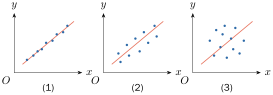
- ចំពោះ (រូបទី 1) : គេសង្កេតឃើញថាចំណុចទិន្នន័យនៅក្បែរបន្ទាត់តម្រែតម្រង់លីនេអ៊ែរ គេថាអថេរទាំងពីរមានទំនាក់ទំនងលីនេអ៊ែរគ្នាខ្លាំង មានន័យថាគេអាចប្រើសមីការតម្រែតម្រង់លីនេអ៊ែរ ដើម្បីប៉ាន់ស្មានតម្លៃ \(\displaystyle y\) ទៅតាមតម្លៃ \(\displaystyle x\) បានល្អ ។
- ចំពោះ (រូបទី 2) : គេសង្កេតឃើញថាចំណុចទិន្នន័យពុំស្ថិតនៅក្បែរបន្ទាត់តម្រែតម្រង់លីនេអ៊ែរ ដូច (រូបទី 1) ឡើយ ។ គេថាអថេរទាំងពីរមានទំនាក់ទំនងលីនេអ៊ែរខ្សោយ មានន័យថាបើគេយកសមីការតម្រែតម្រង់លីនេអ៊ែរមកធ្វើការប៉ាន់ស្មានតម្លៃ \(\displaystyle y\) នោះគេពុំទទួលបានលទ្ធផលល្អទេ ។
- ចំពោះ (រូបទី 3) : គេសង្កេតឃើញថាចំណុចទិន្នន័យនៅរាយប៉ាយនៅឆ្ងាយពីបន្ទាត់តម្រែតម្រង់លីនេអ៊ែរ ។ គេថាអថេរទាំងពីរពុំមានទំនាក់ទំនងលីនេអ៊ែរគ្នាឡើយ មានន័យថាគេមិនអាចយកសមីការលីនេអ៊ែរមកធ្វើការប៉ាន់ស្មានតម្លៃ \(\displaystyle y\) ទៅតាមតម្លៃ \(\displaystyle x\) បានឡើយ ។
ដើម្បីឱ្យដឹងថា តើស្ថិតិនៃពីរអថេរមានទំនាក់ទំនងលីនេអ៊ែរគ្នាដល់កម្រិតណា គេគ្រាន់តែពិនិត្យលើតម្លៃ \(\displaystyle r\) ដែលកំណត់ដោយរូបមន្ត
តម្លៃ \(\displaystyle r\) អាចប្រែប្រួលក្នុងចន្លោះ \(\displaystyle -1 \le r \le 1\) ។ តម្លៃ \(\displaystyle r\) ហៅថា មេគុណតម្រែតម្រង់លីនេអ៊ែរ ។
ជារឿយៗគេតែងជួបប្រទះចំណុចទិន្នន័យដែលមានតម្លៃ \(\displaystyle r\) ដូចករណីខាងក្រោម៖
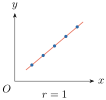
កាលណា \(\displaystyle r=1\) ចំណុចទិន្នន័យស្ថិតនៅលើបន្ទាត់តម្រែតម្រង់លីនេអ៊ែរ មានន័យថា \(\displaystyle x\) និង \(\displaystyle y\) មានទំនាក់ទំនងលីនេអ៊ែរល្អឥតខ្ចោះ ។ \(\displaystyle r>0\) បញ្ជាក់ថា \(\displaystyle y\) កើនទៅតាមតម្លៃ \(\displaystyle x\) ។
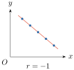
ដូចគ្នានេះដែរ ចំពោះ \(\displaystyle r=-1\) គេថា \(\displaystyle x\) និង \(\displaystyle y\) មានទំនាក់ទំនងលីនេអ៊ែរគ្នាខ្លាំង ។ សមីការតម្រែតម្រង់លីនេអ៊ែរប្រើការបានល្អ ។ \(\displaystyle r<0\) បញ្ជាក់ថា \(\displaystyle y\) ថយទៅតាមតម្លៃ \(\displaystyle x\) ។
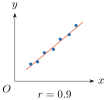
កាលណា \(\displaystyle r=0.9\) ចំណុចទិន្នន័យស្ថិតនៅក្បែរបន្ទាត់តម្រែតម្រង់លីនេអ៊ែរ ។ គេថា \(\displaystyle x\) និង \(\displaystyle y\) មានទំនាក់ទំនងលីនេអ៊ែរគ្នាខ្លាំង ។ \(\displaystyle r>0\) បញ្ជាក់ថា \(\displaystyle y\) កើនទៅតាមតម្លៃ \(\displaystyle x\) ។ សមីការតម្រែតម្រង់លីនេអ៊ែរអាចយកមកធ្វើការប៉ាន់ស្មានលទ្ធផលបានល្អ ។
(សម្គាល់៖ នៅក្នុងសៀវភៅពុម្ពទំព័រ 157 ប្រអប់ \(\displaystyle r=0.9\) បោះពុម្ពខុសជា \(\displaystyle r<0\) ជំនួសឱ្យ \(\displaystyle r>0\) ។)
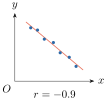
ដូចគ្នានេះដែរ ចំពោះ \(\displaystyle r=-0.9\) គេថា \(\displaystyle x\) និង \(\displaystyle y\) មានទំនាក់ទំនងលីនេអ៊ែរគ្នាខ្លាំង ។ \(\displaystyle r<0\) បញ្ជាក់ថា \(\displaystyle y\) ថយទៅតាមតម្លៃ \(\displaystyle x\) ។ សមីការតម្រែតម្រង់លីនេអ៊ែរអាចយកមកធ្វើការប៉ាន់ស្មានលទ្ធផលបានល្អ ។
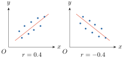
រូបទាំងពីរខាងលើបញ្ជាក់ថា \(\displaystyle x\) និង \(\displaystyle y\) មានទំនាក់ទំនងលីនេអ៊ែរខ្សោយ ។ ដូច្នេះ ការប្រើប្រាស់សមីការតម្រែតម្រង់លីនេអ៊ែរ ដើម្បីធ្វើការប៉ាន់ស្មានតម្លៃ \(\displaystyle y\) ទៅតាមតម្លៃ \(\displaystyle x\) ពុំបានលទ្ធផលល្អទេ ។
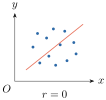
កាលណា \(\displaystyle r=0\) បញ្ជាក់ថា \(\displaystyle x\) និង \(\displaystyle y\) គ្មានទំនាក់ទំនងលីនេអ៊ែរនឹងគ្នា ។ គេពុំអាចប្រើសមីការតម្រែតម្រង់លីនេអ៊ែរដើម្បីធ្វើការប៉ាន់ស្មានលទ្ធផលបានឡើយ ។
ឧទាហរណ៍ : រកមេគុណតម្រែតម្រង់លីនេអ៊ែរនៃទិន្នន័យក្នុងតារាងខាងក្រោម ៖
| \(\displaystyle x_{i}\) | \(\displaystyle 1\) | \(\displaystyle 2\) | \(\displaystyle 3\) | \(\displaystyle 4\) |
| \(\displaystyle y_{i}\) | \(\displaystyle 2\) | \(\displaystyle 4\) | \(\displaystyle 4\) | \(\displaystyle 6\) |
ដំណោះស្រាយ តាមរូបមន្ត
គណនាផលបូកតាមតារាងខាងក្រោម ៖ ដែល \(\displaystyle n=4\) ។
| \(\displaystyle x_{i}\) | \(\displaystyle y_{i}\) | \(\displaystyle x_{i}y_{i}\) | \(\displaystyle x_{i}^{2}\) | \(\displaystyle y_{i}^{2}\) |
| \(\displaystyle 1\) | \(\displaystyle 2\) | \(\displaystyle 2\) | \(\displaystyle 1\) | \(\displaystyle 4\) |
| \(\displaystyle 2\) | \(\displaystyle 4\) | \(\displaystyle 8\) | \(\displaystyle 4\) | \(\displaystyle 16\) |
| \(\displaystyle 3\) | \(\displaystyle 4\) | \(\displaystyle 12\) | \(\displaystyle 9\) | \(\displaystyle 16\) |
| \(\displaystyle 4\) | \(\displaystyle 6\) | \(\displaystyle 24\) | \(\displaystyle 16\) | \(\displaystyle 36\) |
| \(\displaystyle \sum_{i=1}^{4}x_{i}=10\) | \(\displaystyle \sum_{i=1}^{4}y_{i}=16\) | \(\displaystyle \sum_{i=1}^{4}x_{i}y_{i}=46\) | \(\displaystyle \sum_{i=1}^{4}x_{i}^{2}=30\) | \(\displaystyle \sum_{i=1}^{4}y_{i}^{2}=72\) |
គេបាន \(\displaystyle r=\frac{4\times 46-(10\times 16)}{\sqrt{4\times 30-10^{2}}\times\sqrt{4\times 72-16^{2}}}=\frac{24}{\sqrt{20}\times\sqrt{32}}=0.95\) ។
(សម្គាល់៖ នៅក្នុងសៀវភៅពុម្ពទំព័រ 159 បោះពុម្ពខុសជា \(\displaystyle 4\times 36\) ជំនួសឱ្យ \(\displaystyle 4\times 46\) ប៉ុន្តែជំហានបន្ទាប់គណនាបាន \(\displaystyle 24\) ត្រឹមត្រូវ ។ តម្លៃពិតគឺ \(\displaystyle r=\frac{3}{\sqrt{10}}\approx 0.9487\) ។)
ដោយ \(\displaystyle r=0.95\) គេនិយាយថា \(\displaystyle x\) និង \(\displaystyle y\) មានទំនាក់ទំនងលីនេអ៊ែរគ្នាខ្លាំង ។
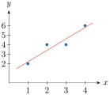
លំហាត់គំរូ : ទិន្នន័យខាងក្រោមជាតារាងទិន្នន័យបង្ហាញពីទំនាក់ទំនងរវាងចំណូលសរុបប្រចាំសប្តាហ៍គិតជាពាន់ដុល្លារនិងពិន្ទុតេស្តរបស់បុគ្គលិក :
| អ្នកលក់ | \(\displaystyle x_{i}\) ពិន្ទុតេស្ត | \(\displaystyle y_{i}\) ប្រាក់ចំណូលប្រចាំសប្តាហ៍ |
| លោក A | \(\displaystyle 4\) | \(\displaystyle 5\) |
| លោក B | \(\displaystyle 7\) | \(\displaystyle 12\) |
| លោក C | \(\displaystyle 3\) | \(\displaystyle 4\) |
| លោក D | \(\displaystyle 6\) | \(\displaystyle 8\) |
| លោក E | \(\displaystyle 10\) | \(\displaystyle 11\) |
គណនាមេគុណតម្រែតម្រង់លីនេអ៊ែរ ។
ដំណោះស្រាយ តាមរូបមន្តមេគុណតម្រែតម្រង់លីនេអ៊ែរ
គេគណនាផលបូកតាមតារាងខាងក្រោម ៖
| អ្នកលក់ | \(\displaystyle x_{i}\) | \(\displaystyle y_{i}\) | \(\displaystyle x_{i}y_{i}\) | \(\displaystyle x_{i}^{2}\) | \(\displaystyle y_{i}^{2}\) |
| លោក A | \(\displaystyle 4\) | \(\displaystyle 5\) | \(\displaystyle 20\) | \(\displaystyle 16\) | \(\displaystyle 25\) |
| លោក B | \(\displaystyle 7\) | \(\displaystyle 12\) | \(\displaystyle 84\) | \(\displaystyle 49\) | \(\displaystyle 144\) |
| លោក C | \(\displaystyle 3\) | \(\displaystyle 4\) | \(\displaystyle 12\) | \(\displaystyle 9\) | \(\displaystyle 16\) |
| លោក D | \(\displaystyle 6\) | \(\displaystyle 8\) | \(\displaystyle 48\) | \(\displaystyle 36\) | \(\displaystyle 64\) |
| លោក E | \(\displaystyle 10\) | \(\displaystyle 11\) | \(\displaystyle 110\) | \(\displaystyle 100\) | \(\displaystyle 121\) |
| \(\displaystyle \sum_{i=1}^{5}x_{i}=30\) | \(\displaystyle \sum_{i=1}^{5}y_{i}=40\) | \(\displaystyle \sum_{i=1}^{5}x_{i}y_{i}=274\) | \(\displaystyle \sum_{i=1}^{5}x_{i}^{2}=210\) | \(\displaystyle \sum_{i=1}^{5}y_{i}^{2}=370\) |
គេបាន \(\displaystyle r=\frac{5\times 274-30\times 40}{\sqrt{5\times 210-30^{2}}\times\sqrt{5\times 370-40^{2}}}=\frac{170}{\sqrt{150\times 250}}=0.88\) ។
\(\displaystyle r=0.88\) បញ្ជាក់ថាមានទំនាក់ទំនងលីនេអ៊ែរគ្នាខ្លាំងរវាងពិន្ទុតេស្តរបស់បុគ្គលិកនិងប្រាក់ចំណូលប្រចាំសប្តាហ៍ មានន័យថាតេស្តបុគ្គលិករបស់អ្នកធ្វើតេស្តមានសុពលភាព ។
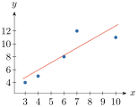
ប្រតិបត្តិ : រកមេគុណតម្រែតម្រង់លីនេអ៊ែរ \(\displaystyle r\) នៃតារាងទិន្នន័យខាងក្រោម ៖
| \(\displaystyle x_{i}\) | \(\displaystyle 5\) | \(\displaystyle 4\) | \(\displaystyle 6\) | \(\displaystyle 5\) | \(\displaystyle 5\) | \(\displaystyle 5\) | \(\displaystyle 6\) | \(\displaystyle 6\) | \(\displaystyle 2\) | \(\displaystyle 7\) | \(\displaystyle 7\) |
| \(\displaystyle y_{i}\) | \(\displaystyle 85\) | \(\displaystyle 103\) | \(\displaystyle 70\) | \(\displaystyle 82\) | \(\displaystyle 89\) | \(\displaystyle 98\) | \(\displaystyle 66\) | \(\displaystyle 95\) | \(\displaystyle 169\) | \(\displaystyle 70\) | \(\displaystyle 48\) |
ចម្លើយ តាមរូបមន្ត
ដូច្នេះ \(\displaystyle x\) និង \(\displaystyle y\) មានទំនាក់ទំនងលីនេអ៊ែរគ្នាខ្លាំង ។
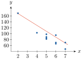
លំហាត់
គេមានបន្ទាត់ \(\displaystyle y=-0.5x+3\) និង \(\displaystyle y=-x+4\) ហើយមានតារាងទិន្នន័យ
\(\displaystyle x_{i}\) \(\displaystyle 0\) \(\displaystyle 2\) \(\displaystyle 2\) \(\displaystyle 5\) \(\displaystyle 6\) \(\displaystyle y_{i}\) \(\displaystyle 4\) \(\displaystyle 2\) \(\displaystyle 0\) \(\displaystyle -2\) \(\displaystyle 1\) ក. សង់តារាងផលបូកនៃ \(\displaystyle x_{i}\), \(\displaystyle y_{i}\), \(\displaystyle y\), \(\displaystyle d\) និង \(\displaystyle d^{2}\) ។
ខ. តើបន្ទាត់មួយណាដែលនៅជិតចំណុចទាំងនោះជាងគេ ?
គ. ដោយប្រើបន្ទាត់ដែលរកឃើញ គណនាតម្លៃ \(\displaystyle y\) ចំពោះ \(\displaystyle x=2\) និង \(\displaystyle x=3\) ។
គេមានតារាងទិន្នន័យស្ថិតិពីរអថេរ
\(\displaystyle x_{i}\) \(\displaystyle 2\) \(\displaystyle 4\) \(\displaystyle 6\) \(\displaystyle 8\) \(\displaystyle 9\) \(\displaystyle y_{i}\) \(\displaystyle 2\) \(\displaystyle 2\) \(\displaystyle 6\) \(\displaystyle 10\) \(\displaystyle 10\) ក. រកសមីការបន្ទាត់តម្រែតម្រង់លីនេអ៊ែរនៃទិន្នន័យខាងលើ ។
ខ. ចូរគណនាតម្លៃ \(\displaystyle y\) ចំពោះ \(\displaystyle x=3\) និង \(\displaystyle x=5\) ។
គេមានតារាងទិន្នន័យស្ថិតិពីរអថេរ
\(\displaystyle x_{i}\) \(\displaystyle 1\) \(\displaystyle 1\) \(\displaystyle 5\) \(\displaystyle 5\) \(\displaystyle y_{i}\) \(\displaystyle 1\) \(\displaystyle 3\) \(\displaystyle 2\) \(\displaystyle 4\) ក. រកសមីការបន្ទាត់តម្រែតម្រង់លីនេអ៊ែរនៃទិន្នន័យខាងលើ ។
ខ. គណនាតម្លៃ \(\displaystyle y\) ចំពោះ \(\displaystyle x=1\), \(\displaystyle x=3\) និង \(\displaystyle x=5\) ។
គ. រកមេគុណតម្រែតម្រង់លីនេអ៊ែរ រួចបកស្រាយទំនាក់ទំនងរវាង \(\displaystyle x_{i}\) និង \(\displaystyle y_{i}\) ។
ក្នុងរោងចក្រកាត់ដេរមួយគេជ្រើសរើសយកកម្មការិនីចំនួន \(\displaystyle 11\) នាក់ ដែលមានអាយុពី \(\displaystyle 18\) ទៅ \(\displaystyle 24\) ឆ្នាំ ដើម្បីធ្វើការសិក្សាទំនាក់ទំនងរវាងកម្ពស់និងម៉ាស ។ តាង \(\displaystyle x_{i}\) ជាកម្ពស់គិតជា \(\displaystyle \text{cm}\) ហើយ \(\displaystyle y_{i}\) ជាម៉ាសគិតជា \(\displaystyle \text{kg}\) គេបានលទ្ធផលដូចតារាងខាងក្រោម៖
\(\displaystyle x_{i}\) \(\displaystyle 150\) \(\displaystyle 152\) \(\displaystyle 152\) \(\displaystyle 155\) \(\displaystyle 155\) \(\displaystyle 157\) \(\displaystyle 158\) \(\displaystyle 158\) \(\displaystyle 160\) \(\displaystyle 160\) \(\displaystyle 165\) \(\displaystyle y_{i}\) \(\displaystyle 50\) \(\displaystyle 58\) \(\displaystyle 48\) \(\displaystyle 50\) \(\displaystyle 52\) \(\displaystyle 60\) \(\displaystyle 53\) \(\displaystyle 63\) \(\displaystyle 54\) \(\displaystyle 62\) \(\displaystyle 56\) ក. រកសមីការបន្ទាត់តម្រែតម្រង់លីនេអ៊ែរ ។
ខ. ចូរប៉ាន់ស្មានម៉ាសកម្មការិនីដែលត្រូវនឹងកម្ពស់ \(\displaystyle 152\text{ cm}\), \(\displaystyle 155\text{ cm}\) និង \(\displaystyle 160\text{ cm}\) ។
គ. រកមេគុណតម្រែតម្រង់លីនេអ៊ែរ រួចបកស្រាយទំនាក់ទំនងរវាង \(\displaystyle x_{i}\) និង \(\displaystyle y_{i}\) ។
តារាងទិន្នន័យខាងក្រោមបានមកពីការិយាល័យសាងសង់ ដែលបង្ហាញពីចំនួនប្រាក់ចំណាយលើការសាងសង់នៅក្នុងទីក្រុងមួយ រយៈពេល \(\displaystyle 6\) ខែចុងក្រោយ ។
ខែ មករា កុម្ភៈ មីនា មេសា ឧសភា មិថុនា ចំនួនប្រាក់ (គិតជាពាន់លានរៀល) \(\displaystyle 42\) \(\displaystyle 19\) \(\displaystyle 30\) \(\displaystyle 49\) \(\displaystyle 68\) \(\displaystyle 69\) បើ \(\displaystyle x=0\) តាងខែមករា ។
ក. រកសមីការបន្ទាត់តម្រែតម្រង់លីនេអ៊ែរ ។
ខ. ចូរធ្វើការប៉ាន់ស្មានចំនួនប្រាក់ដែលចំណាយក្នុងខែកក្កដា ។
ប្រាក់ចំណូលប្រចាំឆ្នាំ (គិតជាកោដិរៀល) របស់សាជីវកម្មមួយឱ្យដោយតារាងទិន្នន័យខាងក្រោម ៖
ឆ្នាំ \(\displaystyle 2005\) \(\displaystyle 2006\) \(\displaystyle 2007\) \(\displaystyle 2008\) \(\displaystyle 2009\) \(\displaystyle 2010\) ប្រាក់ចំណូល \(\displaystyle 66\) \(\displaystyle 82\) \(\displaystyle 127\) \(\displaystyle 201\) \(\displaystyle 310\) \(\displaystyle 392\) បើ \(\displaystyle x=0\) តាងឆ្នាំ \(\displaystyle 2005\) ។
ក. រកសមីការបន្ទាត់តម្រែតម្រង់លីនេអ៊ែរ ។
ខ. ចូរធ្វើការប៉ាន់ស្មានប្រាក់ចំណូលនៅឆ្នាំ \(\displaystyle 2011\) ។
ក្រុមហ៊ុនមួយលក់រថយន្តដែលបានប្រើប្រាស់រួច ។ តម្លៃលក់បញ្ចុះទៅតាមចំនួនឆ្នាំដែលបានប្រើប្រាស់ គេបានតារាងទិន្នន័យដែលបានលក់កន្លងមក ។
ចំនួនឆ្នាំដែលបានប្រើប្រាស់ \(\displaystyle 5\) \(\displaystyle 4\) \(\displaystyle 5\) \(\displaystyle 5\) \(\displaystyle 6\) \(\displaystyle 6\) \(\displaystyle 3\) \(\displaystyle 7\) \(\displaystyle 7\) តម្លៃលក់ (គិតជាលានរៀល) \(\displaystyle 82\) \(\displaystyle 102\) \(\displaystyle 90\) \(\displaystyle 99\) \(\displaystyle 67\) \(\displaystyle 73\) \(\displaystyle 125\) \(\displaystyle 168\) \(\displaystyle 75\) ក. រកសមីការបន្ទាត់តម្រែតម្រង់លីនេអ៊ែរ
ខ. ចូរប៉ាន់ស្មានតម្លៃរថយន្តដែលមានចំណាស់ \(\displaystyle 5\) ឆ្នាំ និង \(\displaystyle 2\) ឆ្នាំ
គ. រកមេគុណតម្រែតម្រង់លីនេអ៊ែរ រួចបកស្រាយទំនាក់ទំនងរវាងទិន្នន័យទាំងពីរ ។
នៅរយៈពេល \(\displaystyle 5\) ឆ្នាំចុងក្រោយនេះ អ្នកគ្រប់គ្រងផ្នែកឃោសនាពាណិជ្ជកម្មម្នាក់បានប្រមូលទិន្នន័យដែលបង្ហាញពីទំនាក់ទំនងរវាងចំនួនថវិកាឃោសនាទំនិញ (គិតជាកោដិរៀល) និងបរិមាណផលិតផលដែលលក់បាន (គិតជាពាន់ឯកតាផលិតផល) ។ គេបានតារាងទិន្នន័យដូចខាងក្រោម ៖
\(\displaystyle x_{i}\) ចំនួនថវិកាឃោសនា \(\displaystyle 4.5\) \(\displaystyle 6.5\) \(\displaystyle 3.5\) \(\displaystyle 3.2\) \(\displaystyle 2.6\) \(\displaystyle y_{i}\) បរិមាណផលិតផលលក់បាន \(\displaystyle 37\) \(\displaystyle 46\) \(\displaystyle 42\) \(\displaystyle 32\) \(\displaystyle 29\) ក. រកសមីការបន្ទាត់តម្រែតម្រង់លីនេអ៊ែរ ។
ខ. ធ្វើការប៉ាន់ស្មានបរិមាណឯកតាផលិតដែលបានលក់ បើគេចំណាយថវិកាអស់ \(\displaystyle 4\) កោដិរៀល ។
គ. រកមេគុណតម្រែតម្រង់លីនេអ៊ែរ រួចបកស្រាយលទ្ធផល ។
ចម្លើយលំហាត់
- ក. ចំពោះបន្ទាត់ \(\displaystyle y=-0.5x+3\) គេបាន \(\displaystyle \sum_{i=1}^{5}d_{i}^{2}=(4-3)^{2}+(2-2)^{2}+(0-2)^{2}+(-2-0.5)^{2}+(1-0)^{2}=1+0+4+6.25+1=12.25\) ។
ចំពោះបន្ទាត់ \(\displaystyle y=-x+4\) គេបាន \(\displaystyle \sum_{i=1}^{5}d_{i}^{2}=(4-4)^{2}+(2-2)^{2}+(0-2)^{2}+(-2-(-1))^{2}+(1-(-2))^{2}=0+0+4+1+9=14\) ។
ខ. បន្ទាត់ \(\displaystyle y=-0.5x+3\) នៅជិតចំណុចទាំងនោះជាងគេ ព្រោះ \(\displaystyle \sum d_{i}^{2}=12.25 < 14\) ។
គ. ពេល \(\displaystyle x=2 \Rightarrow y=2\) និងពេល \(\displaystyle x=3 \Rightarrow y=1.5\) ។ - ក. \(\displaystyle \sum x_{i}=29\), \(\displaystyle \sum y_{i}=30\), \(\displaystyle \sum x_{i}y_{i}=218\), \(\displaystyle \sum x_{i}^{2}=201\), \(\displaystyle n=5\) ។
\(\displaystyle a=\frac{5(218)-29(30)}{5(201)-29^{2}}=\frac{220}{164}=\frac{55}{41}\approx 1.34\), \(\displaystyle b=\frac{1}{5}\left(30-\frac{55}{41}\times 29\right)=-\frac{73}{41}\approx -1.78\) ។
សមីការបន្ទាត់តម្រែតម្រង់លីនេអ៊ែរគឺ \(\displaystyle y=\frac{55}{41}x-\frac{73}{41}\approx 1.34x-1.78\) ។
ខ. ពេល \(\displaystyle x=3 \Rightarrow y=\frac{92}{41}\approx 2.24\) និងពេល \(\displaystyle x=5 \Rightarrow y=\frac{202}{41}\approx 4.93\) ។ - ក. \(\displaystyle \sum x_{i}=12\), \(\displaystyle \sum y_{i}=10\), \(\displaystyle \sum x_{i}y_{i}=34\), \(\displaystyle \sum x_{i}^{2}=52\), \(\displaystyle \sum y_{i}^{2}=30\), \(\displaystyle n=4\) ។
\(\displaystyle a=\frac{4(34)-12(10)}{4(52)-12^{2}}=\frac{16}{64}=0.25\), \(\displaystyle b=\frac{1}{4}(10-0.25\times 12)=1.75\) ។
សមីការគឺ \(\displaystyle y=0.25x+1.75\) ។
ខ. \(\displaystyle x=1 \Rightarrow y=2\), \(\displaystyle x=3 \Rightarrow y=2.5\), \(\displaystyle x=5 \Rightarrow y=3\) ។
គ. \(\displaystyle r=\frac{16}{\sqrt{64}\times\sqrt{20}}=\frac{1}{\sqrt{5}}\approx 0.45\) ។ \(\displaystyle x_{i}\) និង \(\displaystyle y_{i}\) មានទំនាក់ទំនងលីនេអ៊ែរខ្សោយ ។ - ក. \(\displaystyle \sum x_{i}=1722\), \(\displaystyle \sum y_{i}=606\), \(\displaystyle \sum x_{i}y_{i}=94970\), \(\displaystyle \sum x_{i}^{2}=269760\), \(\displaystyle \sum y_{i}^{2}=33646\), \(\displaystyle n=11\) ។
\(\displaystyle a=\frac{11(94970)-1722(606)}{11(269760)-1722^{2}}=\frac{1138}{2076}=\frac{569}{1038}\approx 0.55\), \(\displaystyle b=\frac{1}{11}\left(606-\frac{569}{1038}\times 1722\right)=-\frac{5315}{173}\approx -30.72\) ។
សមីការគឺ \(\displaystyle y=\frac{569}{1038}x-\frac{5315}{173}\approx 0.55x-30.72\) ។
ខ. \(\displaystyle x=152 \Rightarrow y\approx 52.60\text{ kg}\), \(\displaystyle x=155 \Rightarrow y\approx 54.24\text{ kg}\), \(\displaystyle x=160 \Rightarrow y\approx 56.98\text{ kg}\) ។
គ. \(\displaystyle r=\frac{1138}{\sqrt{2076\times 2870}}\approx 0.47\) ។ \(\displaystyle x_{i}\) និង \(\displaystyle y_{i}\) មានទំនាក់ទំនងលីនេអ៊ែរខ្សោយ ។ - ក. \(\displaystyle \sum x_{i}=15\), \(\displaystyle \sum y_{i}=277\), \(\displaystyle \sum x_{i}y_{i}=843\), \(\displaystyle \sum x_{i}^{2}=55\), \(\displaystyle n=6\) ។
\(\displaystyle a=\frac{6(843)-15(277)}{6(55)-15^{2}}=\frac{903}{105}=8.6\), \(\displaystyle b=\frac{1}{6}(277-8.6\times 15)=\frac{74}{3}\approx 24.67\) ។
សមីការគឺ \(\displaystyle y=8.6x+\frac{74}{3}\approx 8.6x+24.67\) ។
ខ. ខែកក្កដាត្រូវនឹង \(\displaystyle x=6 \Rightarrow y=8.6(6)+\frac{74}{3}=\frac{1144}{15}\approx 76.27\) ពាន់លានរៀល ។ - ក. \(\displaystyle \sum x_{i}=15\), \(\displaystyle \sum y_{i}=1178\), \(\displaystyle \sum x_{i}y_{i}=4139\), \(\displaystyle \sum x_{i}^{2}=55\), \(\displaystyle n=6\) ។
\(\displaystyle a=\frac{6(4139)-15(1178)}{6(55)-15^{2}}=\frac{7164}{105}=\frac{2388}{35}\approx 68.23\), \(\displaystyle b=\frac{1}{6}\left(1178-\frac{2388}{35}\times 15\right)=\frac{541}{21}\approx 25.76\) ។
សមីការគឺ \(\displaystyle y=\frac{2388}{35}x+\frac{541}{21}\approx 68.23x+25.76\) ។
ខ. ឆ្នាំ \(\displaystyle 2011\) ត្រូវនឹង \(\displaystyle x=6 \Rightarrow y=\frac{6527}{15}\approx 435.13\) កោដិរៀល ។ - ក. \(\displaystyle \sum x_{i}=48\), \(\displaystyle \sum y_{i}=881\), \(\displaystyle \sum x_{i}y_{i}=4679\), \(\displaystyle \sum x_{i}^{2}=270\), \(\displaystyle \sum y_{i}^{2}=94321\), \(\displaystyle n=9\) ។
\(\displaystyle a=\frac{9(4679)-48(881)}{9(270)-48^{2}}=\frac{-177}{126}=-\frac{59}{42}\approx -1.40\), \(\displaystyle b=\frac{1}{9}\left(881+\frac{59}{42}\times 48\right)=\frac{2213}{21}\approx 105.38\) ។
សមីការគឺ \(\displaystyle y=-\frac{59}{42}x+\frac{2213}{21}\approx -1.40x+105.38\) ។
ខ. \(\displaystyle x=5 \Rightarrow y=\frac{1377}{14}\approx 98.36\) លានរៀល និង \(\displaystyle x=2 \Rightarrow y=\frac{718}{7}\approx 102.57\) លានរៀល ។
គ. \(\displaystyle r=\frac{-177}{\sqrt{126\times 72728}}\approx -0.06\) ។ ទិន្នន័យទាំងពីរគ្មានទំនាក់ទំនងលីនេអ៊ែរគ្នាទេ ។ - ក. \(\displaystyle \sum x_{i}=20.3\), \(\displaystyle \sum y_{i}=186\), \(\displaystyle \sum x_{i}y_{i}=790.3\), \(\displaystyle \sum x_{i}^{2}=91.75\), \(\displaystyle \sum y_{i}^{2}=7114\), \(\displaystyle n=5\) ។
\(\displaystyle a=\frac{5(790.3)-20.3(186)}{5(91.75)-20.3^{2}}=\frac{175.7}{46.66}=\frac{8785}{2333}\approx 3.77\), \(\displaystyle b=\frac{1}{5}\left(186-\frac{8785}{2333}\times 20.3\right)=\frac{102241}{4666}\approx 21.91\) ។
សមីការគឺ \(\displaystyle y=\frac{8785}{2333}x+\frac{102241}{4666}\approx 3.77x+21.91\) ។
ខ. ពេល \(\displaystyle x=4 \Rightarrow y=\frac{172521}{4666}\approx 36.97\) ពាន់ឯកតាផលិតផល ។
គ. \(\displaystyle r=\frac{175.7}{\sqrt{46.66\times 974}}\approx 0.82\) ។ ចំនួនថវិកាឃោសនានិងបរិមាណផលិតផលលក់បានមានទំនាក់ទំនងលីនេអ៊ែរគ្នាខ្លាំង ។
មេរៀនសង្ខេប
- ស្ថិតិនៃពីរអថេរជាទំនាក់ទំនងរវាងតម្លៃនិងតម្លៃនៃទិន្នន័យមួយ ហើយតម្លៃទិន្នន័យនោះហៅថាអថេរ ។
ដើម្បីរកសមីការបន្ទាត់តម្រែតម្រង់លីនេអ៊ែរ គេត្រូវរកចំណុចមធ្យមពីរ
- តម្រៀបចំណុចទិន្នន័យពីអាប់ស៊ីសតូចទៅអាប់ស៊ីសធំ
- ចែកចំណុចទិន្នន័យជាពីរក្រុមស្មើគ្នា បើចំនួននៃចំណុចទិន្នន័យជាចំនួនគូ តែបើចំណុចទិន្នន័យជាចំនួនសេស គេចែកចំណុចទាំងនោះជាពីរក្រុមស្មើគ្នា
- រកចំណុចមធ្យមនៃក្រុមនីមួយៗ
- សរសេរសមីការបន្ទាត់ ដែលកាត់តាមចំណុចមធ្យមទាំងពីរ ។
បើគេមានចំណុចទិន្នន័យ \(\displaystyle (x_{1},y_{1}), (x_{2},y_{2}), (x_{3},y_{3}), \dots, (x_{n},y_{n})\) នោះបន្ទាត់តម្រែតម្រង់លីនេអ៊ែរមានរាង \(\displaystyle y=ax+b\) ដែល
\[a=\frac{n\sum_{i=1}^{n}x_{i}y_{i}-\left(\sum_{i=1}^{n}x_{i}\right)\left(\sum_{i=1}^{n}y_{i}\right)}{n\sum_{i=1}^{n}x_{i}^{2}-\left(\sum_{i=1}^{n}x_{i}\right)^{2}} \quad \text{និង} \quad b=\frac{1}{n}\left(\sum_{i=1}^{n}y_{i}-a\sum_{i=1}^{n}x_{i}\right) \text{ ឬ } b=\bar{y}-a\bar{x} \text{ ។}\]មេគុណតម្រែតម្រង់លីនេអ៊ែរតាងដោយ
\[r=\frac{n\sum_{i=1}^{n}x_{i}y_{i}-\sum_{i=1}^{n}x_{i}\sum_{i=1}^{n}y_{i}}{\sqrt{n\sum_{i=1}^{n}x_{i}^{2}-\left(\sum_{i=1}^{n}x_{i}\right)^{2}} \times \sqrt{n\sum_{i=1}^{n}y_{i}^{2}-\left(\sum_{i=1}^{n}y_{i}\right)^{2}}} \text{ ។}\]
លំហាត់ជំពូក 9
គេឱ្យតារាងស្ថិតិនៃពីរអថេរខាងក្រោម៖
\(\displaystyle x_{i}\) \(\displaystyle 3\) \(\displaystyle 2\) \(\displaystyle 3.5\) \(\displaystyle 4\) \(\displaystyle 5\) \(\displaystyle 6\) \(\displaystyle 6.5\) \(\displaystyle 7\) \(\displaystyle 8\) \(\displaystyle 9\) \(\displaystyle y_{i}\) \(\displaystyle 11\) \(\displaystyle 13\) \(\displaystyle 20\) \(\displaystyle 25\) \(\displaystyle 19\) \(\displaystyle 30\) \(\displaystyle 35\) \(\displaystyle 38\) \(\displaystyle 32\) \(\displaystyle 40\) ក. បកស្រាយស្ថិតិនៃពីរអថេរជាចំណុច ។
ខ. ផ្តុំចំណុចខាងលើជាពីរក្រុម ។
គ. រកចំណុចមធ្យម \(\displaystyle M_{1}\) និង \(\displaystyle M_{2}\) រួចរកសមីការបន្ទាត់ដែលកាត់តាម \(\displaystyle M_{1}\) និង \(\displaystyle M_{2}\) ។
គេមានសមីការបន្ទាត់ \(\displaystyle y=-0.6x+3\) និង \(\displaystyle y=-x+3\) និងតារាងទិន្នន័យ :
\(\displaystyle x_{i}\) \(\displaystyle 0\) \(\displaystyle 2\) \(\displaystyle 2\) \(\displaystyle 5\) \(\displaystyle 6\) \(\displaystyle y_{i}\) \(\displaystyle 4\) \(\displaystyle 2\) \(\displaystyle 0\) \(\displaystyle -2\) \(\displaystyle 1\) ក. ចូរសង់តារាងផលបូកនៃ \(\displaystyle x_{i}\), \(\displaystyle y_{i}\), \(\displaystyle y\), \(\displaystyle d\) និង \(\displaystyle d^{2}\) ។
ខ. តើបន្ទាត់មួយណានៅជិតចំណុចទាំងនោះជាងគេ ?
គ. ដោយប្រើបន្ទាត់ដែលរកឃើញ គណនាតម្លៃ \(\displaystyle y\) ចំពោះ \(\displaystyle x=3\) និង \(\displaystyle x=4\) ។
តារាងទិន្នន័យខាងក្រោមបង្ហាញពីចំនួនប្រាក់ដែលចំណាយលើការសាងសង់ក្នុងតំបន់មួយនៅអំឡុងពេល \(\displaystyle 5\) ខែ ។
\(\displaystyle x_{i}\) ខែ មករា កុម្ភៈ មីនា មេសា ឧសភា ចំនួនប្រាក់ (គិតជាពាន់ដុល្លារ) \(\displaystyle y_{i}\) \(\displaystyle 15\) \(\displaystyle 17\) \(\displaystyle 24\) \(\displaystyle 20\) \(\displaystyle 25\) បើ \(\displaystyle x_{i}=0\) តាងខែមករា
ក. រកសមីការបន្ទាត់តម្រែតម្រង់លីនេអ៊ែរ ។
ខ. ចូរធ្វើការប៉ាន់ស្មានចំនួនប្រាក់ដែលនឹងចំណាយក្នុងខែមិថុនា ។
ចូរពិនិត្យតារាងទិន្នន័យនៃពីរអថេរ
\(\displaystyle x_{i}\) \(\displaystyle -3\) \(\displaystyle -2\) \(\displaystyle -1\) \(\displaystyle 0\) \(\displaystyle 1\) \(\displaystyle 2\) \(\displaystyle 3\) \(\displaystyle y_{i}\) \(\displaystyle 9\) \(\displaystyle 4\) \(\displaystyle 1\) \(\displaystyle 0\) \(\displaystyle 1\) \(\displaystyle 4\) \(\displaystyle 9\) ក. រកសមីការបន្ទាត់តម្រែតម្រង់លីនេអ៊ែរ ។
ខ. រកមេគុណតម្រែតម្រង់លីនេអ៊ែរ \(\displaystyle r\) ។
គ. តាមតម្លៃ \(\displaystyle r\) ខាងលើ តើ \(\displaystyle x_{i}\) និង \(\displaystyle y_{i}\) មានទំនាក់ទំនងលីនេអ៊ែរគ្នាដែរឬទេ? តើគេអាចប្រើសមីការបន្ទាត់តម្រែតម្រង់លីនេអ៊ែរខាងលើសម្រាប់ធ្វើការប៉ាន់ស្មានលទ្ធផលឬទេ?
ចម្លើយលំហាត់ជំពូក 9
- ក. ចំណុចទិន្នន័យតម្រៀបតាមអាប់ស៊ីសកើនគឺ \(\displaystyle (2,13), (3,11), (3.5,20), (4,25), (5,19), (6,30), (6.5,35), (7,38), (8,32), (9,40)\) ។
ខ. ក្រុមទី 1 ៖ \(\displaystyle (2,13), (3,11), (3.5,20), (4,25), (5,19)\) ; ក្រុមទី 2 ៖ \(\displaystyle (6,30), (6.5,35), (7,38), (8,32), (9,40)\) ។
គ. \(\displaystyle M_{1}(3.5, 17.6)\) និង \(\displaystyle M_{2}(7.3, 35)\) ។ សមីការបន្ទាត់កាត់តាម \(\displaystyle M_{1}\) និង \(\displaystyle M_{2}\) គឺ \(\displaystyle y=\frac{87}{19}x+\frac{299}{190}\approx 4.58x+1.57\) ។ - ក. ចំពោះ \(\displaystyle y=-0.6x+3\) បាន \(\displaystyle \sum d_{i}^{2}=1^{2}+0.2^{2}+(-1.8)^{2}+(-2)^{2}+1.6^{2}=10.84\) ។
ចំពោះ \(\displaystyle y=-x+3\) បាន \(\displaystyle \sum d_{i}^{2}=1^{2}+1^{2}+(-1)^{2}+0^{2}+4^{2}=19\) ។
ខ. បន្ទាត់ \(\displaystyle y=-0.6x+3\) នៅជិតចំណុចទាំងនោះជាងគេ ព្រោះ \(\displaystyle 10.84 < 19\) ។
គ. ពេល \(\displaystyle x=3 \Rightarrow y=1.2\) និងពេល \(\displaystyle x=4 \Rightarrow y=0.6\) ។ - ក. \(\displaystyle \sum x_{i}=10\), \(\displaystyle \sum y_{i}=101\), \(\displaystyle \sum x_{i}y_{i}=225\), \(\displaystyle \sum x_{i}^{2}=30\), \(\displaystyle n=5\) ។
\(\displaystyle a=\frac{5(225)-10(101)}{5(30)-10^{2}}=\frac{115}{50}=2.3\), \(\displaystyle b=\frac{1}{5}(101-2.3\times 10)=15.6\) ។
សមីការគឺ \(\displaystyle y=2.3x+15.6\) ។
ខ. ខែមិថុនាត្រូវនឹង \(\displaystyle x=5 \Rightarrow y=2.3(5)+15.6=27.1\) ពាន់ដុល្លារ ។ - ក. \(\displaystyle \sum x_{i}=0\), \(\displaystyle \sum y_{i}=28\), \(\displaystyle \sum x_{i}y_{i}=0\), \(\displaystyle \sum x_{i}^{2}=28\), \(\displaystyle \sum y_{i}^{2}=196\), \(\displaystyle n=7\) ។
\(\displaystyle a=0\), \(\displaystyle b=\frac{28}{7}=4\) ។ សមីការបន្ទាត់តម្រែតម្រង់លីនេអ៊ែរគឺ \(\displaystyle y=4\) ។
ខ. \(\displaystyle r=0\) ។
គ. ដោយ \(\displaystyle r=0\) នោះ \(\displaystyle x_{i}\) និង \(\displaystyle y_{i}\) គ្មានទំនាក់ទំនងលីនេអ៊ែរគ្នាទេ ដូច្នេះគេពុំអាចប្រើសមីការបន្ទាត់តម្រែតម្រង់លីនេអ៊ែរខាងលើសម្រាប់ធ្វើការប៉ាន់ស្មានលទ្ធផលបានឡើយ ។
ខ្លឹមសារ៖ សៀវភៅពុម្ពគណិតវិទ្យាថ្នាក់ទី១២ របស់ក្រសួងអប់រំ យុវជន និងកីឡា · វាយអត្ថបទ គូររូបភាពឡើងវិញ និងរៀបចំលើអនឡាញដោយលោកគ្រូ សាន សុខលី សម្រាប់ការសិក្សាដោយឥតគិតថ្លៃ និងមិនរកប្រាក់ចំណេញ។ មិនមែនជាការបោះពុម្ពផ្លូវការរបស់ក្រសួងទេ។